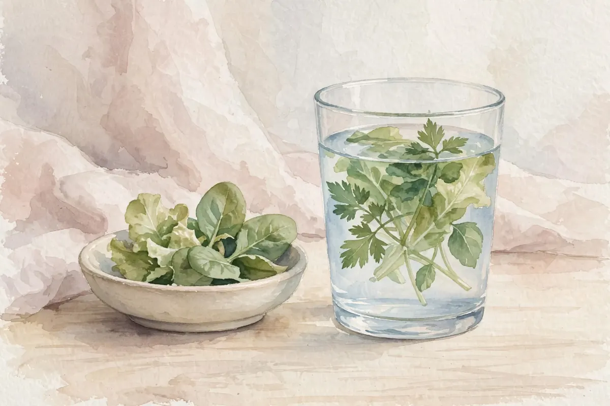

トップ ＞ インナーケア・サプリ ＞ 鉄分系サプリの表示の読み方：含有量と種類、ここを見る
鉄分系サプリの表示の読み方：含有量と種類、ここを見る

鉄分系のサプリは、店頭でも種類が多く、表示の見方が分かりにくいと聞かれることがあります。施術の現場でも、食事の話の流れで「鉄分の表示って、どこを見たらいいの」と聞かれることがあります。鉄は食品にも含まれている成分ですが、サプリの表示は商品ごとに書き方が違います。この記事では、鉄分系の表示の読み方を整理します。特定の商品の話ではなく、表示を読むときの考え方です。サプリは食品として案内し、体への作用を断定しないのが、このサイトの約束です。
鉄の種類と含有量の表示を読む
まず確認したいのは、1日あたりの目安量と、その中に鉄がどれだけ含まれているかです。パッケージには「1日2粒を目安に」「1日あたりの摂取目安量」といった案内と、「鉄 ○○mg」といった含有量が書かれています。含有量は、1粒あたりか、1日分あたりか、表示の単位を確認します。
鉄の表示名にも種類があります。「ヘム鉄」「ピロリン酸第二鉄」など、原材料名の欄に書かれている名前が、鉄そのものを指す場合があります。原材料名は、多く含まれているものから順に並んでいるので、鉄がどの位置にあるかを見ると、配合の目安がつかみやすくなります。含有量の単位は、mgで書かれていることが多いですが、商品によってはμgで書かれている場合もあります。単位が違うと、数字の見た目が大きく変わるので、単位まで含めて確認するのが大切です。
「栄養機能食品（鉄）」と書かれている商品もあります。これは、鉄について国が定めた基準を満たし、表示が認められた食品のことです。表示には「鉄は、赤血球を作るのに必要な栄養素です」といった文言が書かれていることがあります。こうした表示は、食品としての機能の案内であり、薬の表示とは別物です。
剤形と飲み方の表示
鉄分系のサプリには、錠剤、カプセル、チュアブルなど、いろいろな形があります。錠剤やカプセルは、水と一緒に飲むタイプが多く、チュアブルは噛んで飲むタイプです。表示には「水またはぬるま湯と一緒にお召し上がりください」「噛んでお召し上がりください」といった飲み方が書かれています。形に合った飲み方を確認しておきましょう。
飲む回数やタイミングも、表示で確認しておきたい点です。「1日2回、朝夕の食後に」「1日1回」など、回数とタイミングが書かれていることが多いです。目安量は1日の量なので、1回分に分けて飲む場合は、表示の回数を守ります。飲み忘れたときは、表示に「飲み忘れた場合は」といった案内がある場合があるので、そちらを確認します。
また、ほかのサプリと併用する場合は、成分の重なりを確認します。鉄は複数のサプリに含まれていることがあるので、1日の合計量が表示の目安量を超えていないかを確認しておきます。ほかに飲んでいるサプリがある場合は、原材料名の欄を見比べてみてください。
保管と期限、相談先の確認
鉄分系のサプリは、湿気や光に弱いものもあるので、保管の表示を確認しておきたいところです。パッケージには「直射日光・高温多湿を避けて保管してください」といった案内が書かれていることが多いです。開封後は、フタをしっかり閉めて、湿気の少ない場所に置きます。
賞味期限は、未開封の状態での期限です。開封後は、表示に「開封後はお早めにお召し上がりください」といった案内がある場合があります。開封日をメモしておくと、使い切りの目安がつかみやすくなります。
薬を飲んでいる方や、妊娠中・授乳中の方は、表示に「医師・薬剤師にご相談ください」といった案内がある場合があります。気になる場合は、かかりつけの医師や薬剤師に相談してください。この記事は表示の読み方の案内であり、商品ごとに表示がある場合は、そちらが優先です。
セラフィナ「鉄分は1日分で何mgか、まずそこを見る。ほかのサプリと重なってないか、足し算するのが大事だよ」

セラフィナ｜美容の道具箱の案内役
「量と表示が分かれば、美容は失敗しない。」——セラフィナと白猫のモコが、買う前のチェックポイントを案内します。綺麗になりたい気持ちに正直に、でも表示は冷静に読むのが、このサイトの約束です。